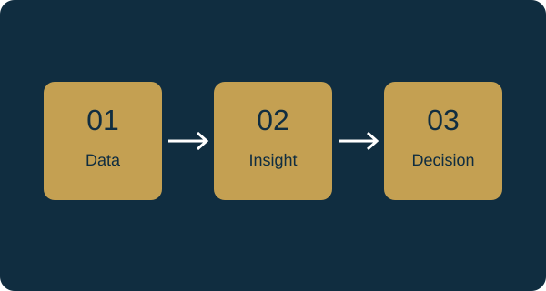

Understand your data
Find patterns, check data quality, and identify measures that explain performance.
Explore servicesFrom information to insight
Bring scattered numbers into focus. Explore analytics, clear dashboards, and practical AI workflows built around your business decisions.
A clearer view of performance
Illustrative dashboard with fictional data. The six bars show a generally rising monthly trend.
Three ways to move forward
Find patterns, check data quality, and identify measures that explain performance.
Explore servicesTurn spreadsheets and reports into dashboards that bring key measures together.
Explore servicesIdentify practical AI opportunities and plan how people will review the results.
Explore servicesAbout BIG
The Business Intelligence Guys is a business intelligence concept focused on helping small businesses and organizations understand their information and simplify reporting.
Our approach starts with a question, connects it to the available data, and presents the result in language your team can use.

Identify one recurring decision. Gather the relevant data. Agree on what success looks like before choosing a tool.
Explore fifteen service ideas, save your favorites, and outline the question you want your data to answer.
Start an inquiry